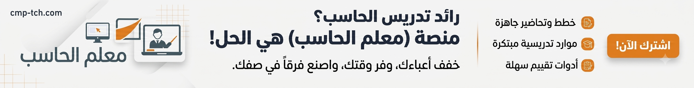

نشاط المنصة في 2026
كيف تعمل العجلة؟
4 خطوات بسيطة لاختيار عادل وسريع
أضف الأسماء
أدخل الأسماء يدويًا أو استورد قائمة بسهولة.
لف العجلة
اضغط زر الدوران أو استخدم الوضع التلقائي.
اعرض النتيجة
تظهر النتيجة بشكل عادل وفوري.
احفظ وشارك النتيجة
احفظ النتيجة وشاركها مع الآخرين.
استخدم وضع الحفظ إذا كنت تستخدم العجلة باستمرار
احفظ القوائم والنتائج وارجع لها لاحقًا من أي جهاز بعد تسجيل الدخول.
متى تحتاج عجلة الأسماء؟
أنشطة صفية ومسابقات
إضافة المتعة والعدالة في المواقف الصفية.
اختيار فائز
اختيار فائز عشوائي للمسابقات والجوائز.
توزيع مجموعات
تقسيم المجموعات بشكل عادل وسلس.
اختيار مشاركين
اختيار مشاركين عشوائيًا للأنشطة أو العروض.
الأسئلة الشائعة
هل يمكنني استخدام العجلة بدون تسجيل دخول؟
نعم، يمكنك استخدام العجلة مباشرة. تسجيل الدخول مطلوب فقط لحفظ القوائم والنتائج.
هل بياناتي آمنة؟
نعم، يتم حفظ القوائم الخاصة بحسابك ولا تظهر للمستخدمين الآخرين.
هل يمكن استيراد ملف أسماء؟
نعم، يمكنك استيراد ملف TXT أو CSV، وكل سطر يتم التعامل معه كاسم مستقل.
هل أستطيع تخصيص العجلة؟
نعم، يمكن تخصيص الأسماء، خلط القائمة، وتشغيل أو إيقاف الصوت والوضع التلقائي.